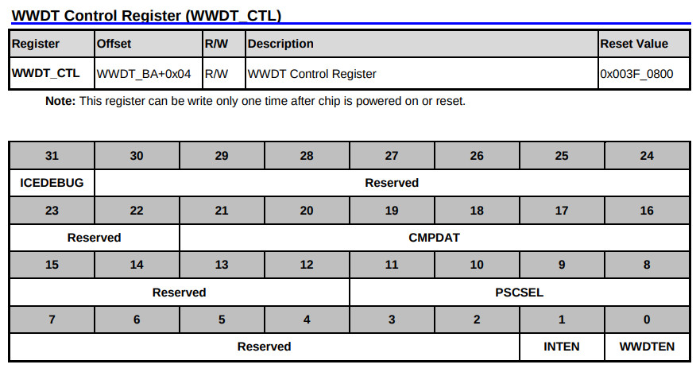

參考資訊：
https://github.com/OpenNuvoton/NUC970_NonOS_BSP
WWDTEN、PSCSEL

.equ GPIOB_DIR, (0xb8003000 + 0x40)
.equ GPIOB_DATAOUT, (0xb8003000 + 0x44)
.equ CLK_PCLKEN0, (0xb0000200 + 0x18)
.equ WWDT_RLDCNT, (0xb8001900 + 0x00)
.equ WWDT_CTL, (0xb8001900 + 0x04)
.equ WWDT_STATUS, (0xb8001900 + 0x08)
.text
.align 2
.global _start
_start: b reset
_undef: b .
_swi: b .
_pabort: b .
_dabort: b .
_reserved: b .
_irq: b .
_fiq: b .
reset:
ldr r0, =CLK_PCLKEN0
ldr r1, [r0]
orr r1, #((1 << 3) | (1 << 1))
str r1, [r0]
ldr r0, =GPIOB_DIR
ldr r1, =(1 << 0)
str r1, [r0]
ldr r0, =GPIOB_DATAOUT
ldr r1, =~(1 << 0)
str r1, [r0]
ldr r4, =1000000
1:
nop
subs r4, r4, #1
bne 1b
ldr r0, =WWDT_CTL
ldr r1, =0xf01
str r1, [r0]
b .
.end
若沒有在限定的Window期間Reset Watchdog，則觸發系統Reset，SDRAM資料消失，LED熄滅